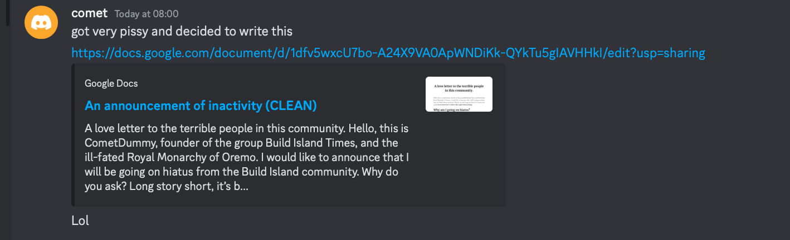

CometDummy Quits Build Island
Published on: Friday 25th October
Published by: Eunoia Studios (stealthtrooper36)
CometDummy, a famous player whose known for his builds and founding the Build Island Times, has decided to distance himself from the community and the game for an indefinite amount of time, until Build Island is no longer infected with monkeys.
Comet had released a document going over why he chose to leave this community. He states it's the same exact reason why his friend, Valor, chose to leave aswell.
As I have already stated, I plan to go on hiatus because you people are actually terrible. Everytime I interact with the community, there's always something terrible going on. If not that, It’s the people acting terribly. I always have to deal with all the nonsense you people do or say. Everytime I get pinged on the BI server, it’s always some stupidity you people keep spewing. You people just love to obsess over something someone did, to the point you start stalking them despite the fact they’re long gone from the community.
- CometDummy
In his document, he also mentions the toxicity of Build Island LARP
LARP is essentially just military roleplay in Build Island. LARP was popularized in 2023 after TAF & PDE's souring relations and the first URSR Coalition war, it has recieved criticism from many due to it containing too many children having so much drama.
ComeDummy mentions how LARP owners pretend to be the only sane Build Islanders and how they are overly sensitive (like for an example, how GILGAROS cut ties with Ashton after he blew up the neutral spawn during a war).
Their influence spreads far beyond their groups. They have the ability to take anyone down, when they want it. These people can just freely ban anyone outside of their group’s influence once they somehow gain access to a moderator slot. The smallest controversy of them can easily be dismissed. I have had leaders tell me they can just get away with anything. People in these groups even go as far as to roleplay children getting shown NSFW content, or claim someone that isn’t even affliated with them is their so-called “ally.” All this is done in the name of their faction that is tied to a dying building game.
- CometDummy
This refers to how powerful people, such as some larpers have the ability to take down anyone they please. This is proved the fact how people such as 109azoo77 and myself (StealthTrooper36) can get banned falsely because of their abused moderator privelleges. "I have had leaders tell me they can just get away with anything." likely refers to how administrators like Goner can get away with shit like literally posting NSFW.
"People in these groups even go as far as to roleplay children getting shown NSFW content," refers to the time when firstgamerfirst (or known as Alex) made a URSAn news report where a URSAN Television station was hijacked and displayed porn to thousands of children.
"or claim someone that isn’t even affliated with them is their so-called 'ally.'" refers to how people often state that a person is glazing another person, solely because they are defending them. One instance of this, is during the Better Build Island Initiative. When Blaulotz was being shouted at from all direcions, he told Nappitwins that he was a TAF glazer because he was defending him due to Duck's false game ban.
Back to Home.